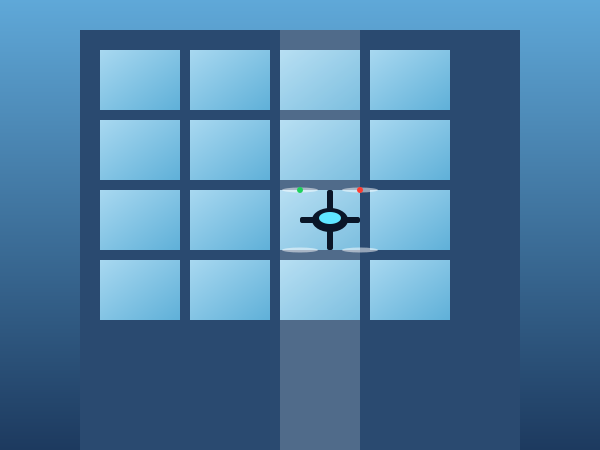

01 — Window cleaning
Crystal-clear glass on the buildings nobody else can reach.
High-rise office blocks, glass curtain walls, atriums, listed buildings, conservatories with vaulted apexes — our drones reach surfaces that would take a week of scaffolding in a single morning. The pure-water reach-and-wash system on board lifts dirt without detergents, dries spot-free and won't damage glass coatings.
- Reach up to 70m vertical without access plant
- 0 ppm pure water — no streaking, no spotting
- Safe on solar control films, ceramic coatings and self-cleaning glass
- Recurring service contracts available — quarterly, monthly, bespoke
